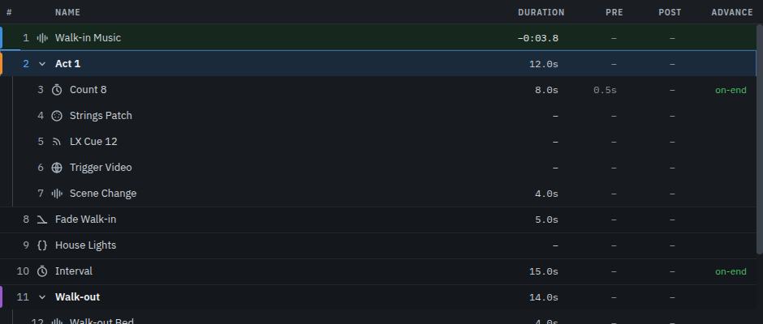
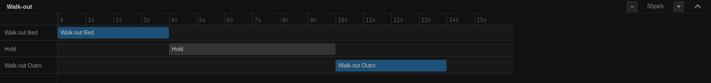

Building a cue list
A show is a list of cues in the order they happen. This is how to get one from a script to something you can run with one finger.
Adding and ordering
The toolbar adds cues: Audio, Group, Fade, Wait, Stop, and the rest under More. A new cue lands after the selected one — or drag the button into the list and it lands where you let go, between two cues, at the top, or inside an open group. Dragging a row moves it; dropping audio files on the list adds them where you dropped them.

Right-click a row for duplicate, delete, colour, arm and disarm. A disarmed cue stays in the list and is skipped by GO, which is how you take something out of a show without losing it. Undo is Ctrl/⌘ + Z and covers the last 50 edits.
The columns after the name are yours to arrange: drag a heading to move its column,
drag its left edge to size it, and right-click the header to show or hide one —
Notes among them, which reads the first line of each cue's notes on its
row. The layout belongs to this computer rather than the show, and
Reset columns on the same menu puts the list back as it was.
Double-click a Pre or Post cell — or the
Duration of a wait or a fade — to type a new time where you read it:
1.5 or 1:30, Enter to keep it, Esc to put it back.
With several rows selected (Shift-click a range, Ctrl/⌘-click one at a time) the menu acts on all of them. Edit… sets a pre-wait, post-wait or advance across the set — and an audio cue's volume and fades across the audio cues in it — leaving any field you do not fill as each cue has it. Its Number from and Step renumber the set in list order (from 10 by 0.5 reads 10, 10.5, 11), and refuse a number another cue already has. Fade out and Add stop make the cue that ends what is selected and put it after the last of them: one cue for one, or a group that fires one for each at once. Each of these is one undo.
Numbers and names
Numbers are yours: they are text, not positions, so 12.5 and
LX 12 are both fine and inserting a cue renumbers nothing. Names are
what you read at speed — name them for the moment in the show, not the file.
Double-click a row to rename it.
Every cue has notes. The first line appears in the bar at the top when the cue is playing or next, so a note is worth writing: "let it run under the scene change", "wait for the door".
The cue types
Fourteen of them, and the reference lists every field of each. In practice:
| Type | What it is for |
|---|---|
| Audio | Play a file. Level, pan, fades, loops, trims and routing. |
| Wait | Hold for a set time. The glue in a sequence. |
| Fade | Ramp another cue's level, and optionally stop it at the end. |
| Stop | Stop one cue, or everything, with or without a fade. |
| Group | Cues inside a cue: fire them in order, all at once, at random, or on a timeline. |
| MIDI / OSC / Network | Send a message to something else in the rig. |
| MIDI File | Play a .mid to a synth, a click, or anything else on a MIDI port. |
| Show Control | MSC: GO, STOP and LOAD to a desk that speaks it. |
| Script | Run JavaScript, including a system command. |
| ScenePro | Move the sound desk to a scene you built. |
| Devamp | Let a looping cue out of its loop and play on. |
Playing a MIDI file
A MIDI File cue (in the toolbar's More menu) plays a Standard MIDI File to one port — the keys part of a backing track to a synth, a click to the band's in-ears, a sequence to a lighting desk that listens on MIDI. Browse to the file and the tab reads it back: its format, its tempo, its length, and each track by name, so you know it is the file you meant. Pick the port, and set a Rate if the band has moved the song's tempo; the cue's length follows, and it completes when the file does, so the cue after it can follow on by itself. A Start time and End time play part of the file, and a Loop count of −1 vamps it until a Stop. On the Channels tab you can send each of the file's channels out as a different one — or not at all, to drop the part a player is covering live — and transpose the notes for tonight's key, with the drums on channel 10 left where they are. Start it part-way and every channel is set the way the file had it first, so the right sounds are on the right channels before the next note; stop it and every note it played is released, with the sustain pedal lifted.
Groups
A group is a cue with cues inside it. GO fires the group, and what happens next is the group's mode:
- Sequence — its children in order, each after the one before.
- All at once — everything together: a bang, a blackout, three sends in one press.
- Random — one child, drawn at random, every child once before any repeats. Good for a stinger you do not want to be identical every night, or the same twice in a row.
- Timeline — each child at an offset you set by dragging it. The dock draws the timeline for a group in this mode.
- Playlist — one child per GO. The group holds the show until a full pass is done, so a walk-in playlist of thirty cues is thirty presses.

Stopping a cue inside a group is not the same as stopping the group: the group moves on from it. A sequence steps to the next child, a timeline stops waiting for the one you took away, and a playlist's pass is left where it was, so the next GO fires the child after it.
Open a group with the chevron on its row. A group's duration is worked out from what is inside it.
Timing: pre-wait, post-wait and advance
Three settings on the Basics tab decide how a cue behaves in time.
| Setting | What it does |
|---|---|
| Pre-wait | Waits this long after GO before the cue does anything. |
| Post-wait | Waits this long after the cue finishes before handing over. |
| Advance | Whether the next cue fires by itself: None, On start (as soon as this one starts) or On end (when it finishes). |
On start chains cues that should happen together but stay separate rows. On end is the one to reach for after a wait: a count-in that hands over to the music by itself is a wait with Advance set to On end.
Next
Working with sound goes into audio cues properly. Running the show is the night itself.